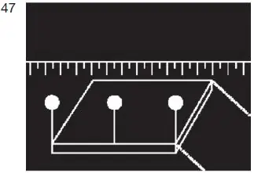

§ 3.23 Bezeichnung der Schwimmkörper und schwimmenden Anlagen beim Stillliegen(Anlage 3: Bild 47)
Binnenschifffahrtsstraßen-Ordnung
Unbeschadet der besonderen Bedingungen, die nach § 1.21 festgelegt werden können, muss ein Schwimmkörper oder eine schwimmende Anlage beim Stillliegen bei Nacht
von allen Seiten sichtbare weiße gewöhnliche Lichter in genügender Zahl, um ihre fahrwasserseitigen Umrisse kenntlich zu machen, |  |
führen. Die in Satz 1 vorgeschriebenen Lichter brauchen nicht geführt zu werden, wenn die Voraussetzungen des § 3.20 Nummer 3 Buchstabe b oder c oder Nummer 4 erfüllt sind. Wenn durch die Lage des Schwimmkörpers oder der schwimmenden Anlage eine Behinderung des Schiffsverkehrs ausgeschlossen und dieser oder diese nicht über Gebühr durch die Schifffahrt gefährdet ist, kann die zuständige Behörde für einzelne Schwimmkörper oder schwimmende Anlagen das Stillliegen ohne Beleuchtung zulassen.